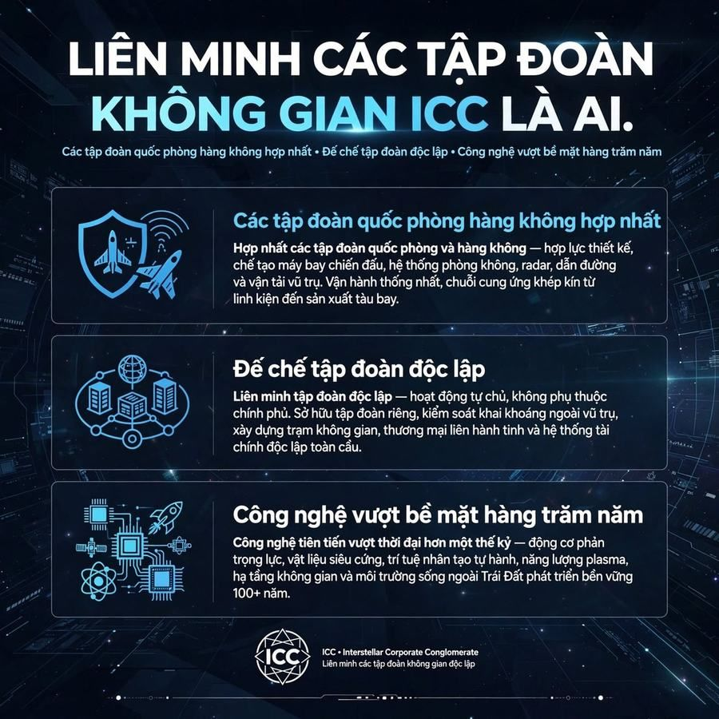
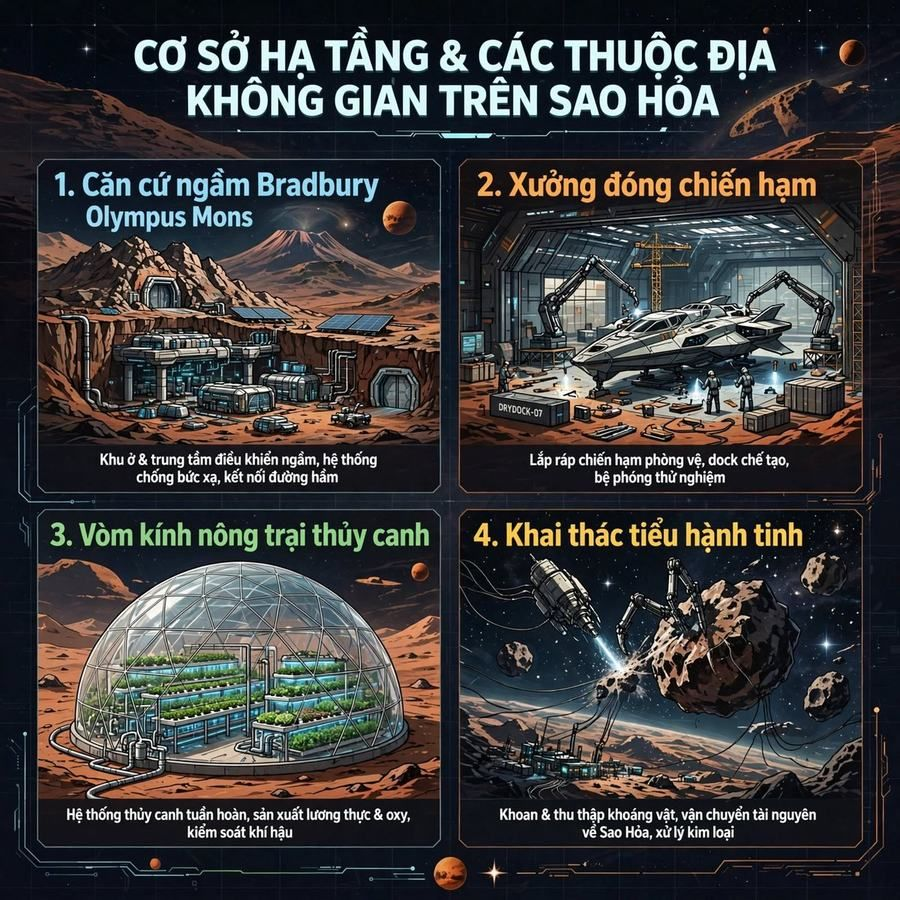
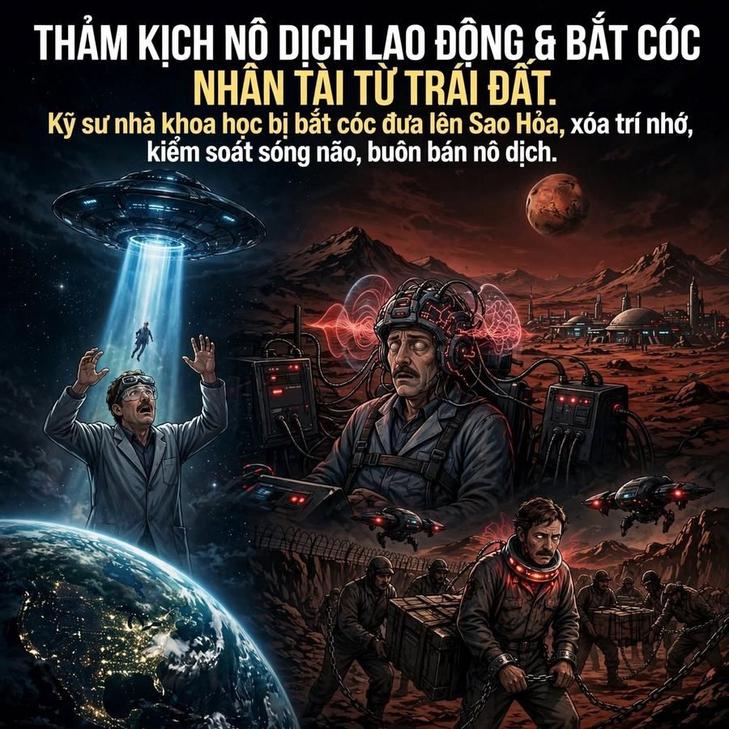
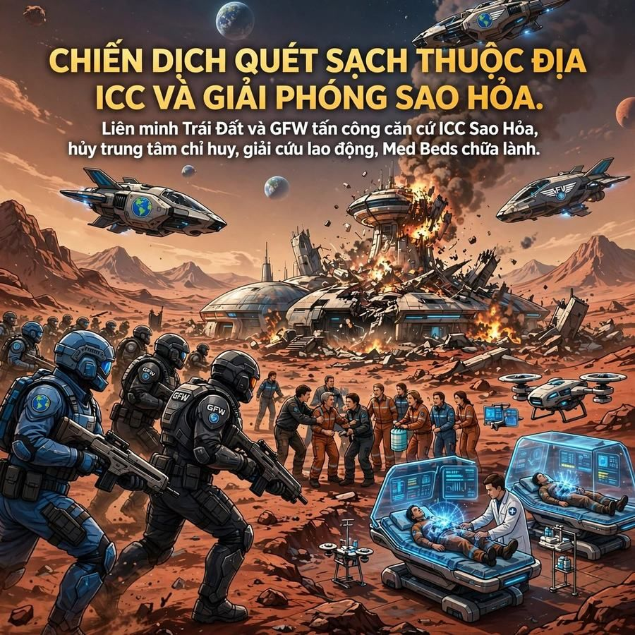
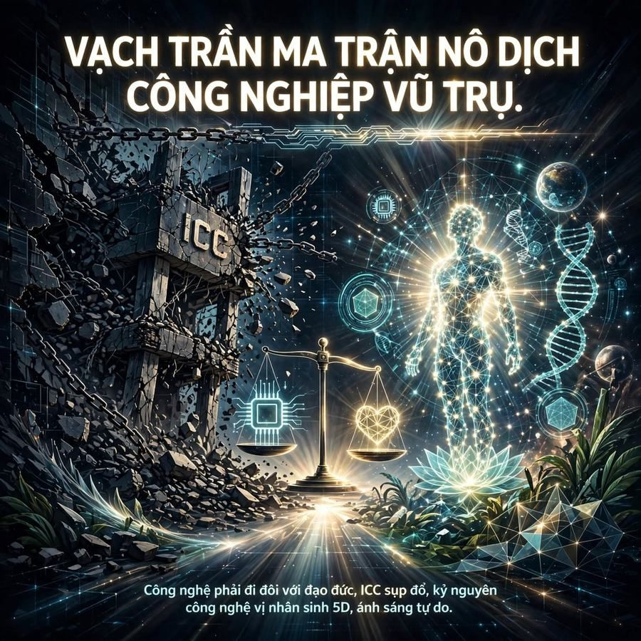

Trang chủ / Chuyên đề 5: Chương Trình Không Gian Bí Mật / Kỳ 43
Chuyên đề 5 · Kỳ 43 / 90
THUỘC ĐỊA SAO HỎA & BÍ MẬT CÁC TẬP ĐOÀN KHÔNG GIAN TƯ NHÂN (ICC)

Ở Kỳ 2, chúng ta đã khám phá Hạm đội Solar Warden của Hải quân Mỹ — lực lượng gác cổng Hệ Mặt Trời đóng vai trò đòn bẩy kháng chiến bảo vệ Trái Đất trước các phe phái tiêu cực ngoài không gian. Tuy nhiên, bên cạnh các chương trình mang tính quân sự chính phủ, một thực thể thương mại - công nghiệp cực kỳ hùng mạnh và tàn khốc đã âm thầm vươn vòi bạch tuộc ra toàn bộ Hệ Mặt Trời: Liên Minh Các Tập Đoàn Không Gian Tư Nhân (Interplanetary Corporate Conglomerate — ICC). ICC là ai và được hình thành từ những thế lực tập đoàn nào trên Trái Đất? Sự thật đằng sau việc xây dựng hàng loạt thuộc địa, xưởng đóng tàu và căn cứ công nghiệp ngầm dưới bề mặt Sao Hỏa diễn ra ra sao? Thảm kịch về chương trình "Buôn bán người ngoài vũ trụ" (Human Trafficking) bắt cóc các nhà khoa học và kỹ sư từ Trái Đất để bóc lột lao động diễn ra như thế nào? Và chiến dịch quét sạch các thuộc địa ICC trên Sao Hỏa của Liên minh Trái Đất phối hợp với Liên Đoàn Thiên Hà mang lại kết quả bừng tỉnh ra sao?
1. LIÊN MINH CÁC TẬP ĐOÀN KHÔNG GIAN (ICC) LÀ AI?
ICC là một tổ hợp liên minh bao gồm các tập đoàn hàng không vũ trụ, công nghệ quốc phòng và tài chính ngầm hàng đầu Trái Đất. A. Sự Thâu Tóm Của Tổ Hợp Công Nghiệp - Quân Sự
- Hợp Nhất Giữa Các Gã Khổng Lồ Công Nghệ: ICC được thành lập từ sự kết hợp ngầm giữa các tập đoàn quốc phòng tư nhân hàng đầu, các nhà thầu hàng không và bộ máy tài chính đen.
- Độc Lập Hoàn Toàn Với Chính Phủ: ICC không chịu sự quản lý của bất kỳ quốc hội hay luật pháp quốc gia nào trên Trái Đất. Họ hoạt động trong tư thế một "Đế chế Tập đoàn" hoàn toàn tự do và nắm giữ nguồn ngân sách vô hạn từ các hoạt động chuyển giá và tài chính bóng tối. B. Siêu Việt Về Công Nghệ So Với Bề Mặt
- Sở Hữu Công Nghệ Trước Bề Mặt Hàng Trăm Năm: Trong khi nhân loại bề mặt vẫn sử dụng điện thoại thông minh hay năng lượng hóa thạch thô ráp, ICC đã làm chủ công nghệ năng lượng điểm không, sản xuất vật liệu tự chữa lành, công nghệ sinh học tái tạo tế bào và du hành xuyên Cổng Sao.

2. CƠ SỞ HẠ TẦNG & CÁC THUỘC ĐỊA KHÔNG GIAN TRÊN SAO HỎA
Bề mặt Sao Hỏa không phải là một hoang mạc đỏ chết chóc như những hình ảnh bị cắt sửa công khai, mà cất giữ một hệ thống thuộc địa công nghiệp ngầm khổng lồ. A. Căn Cứ Ngầm Sâu & Vòm Sinh Thái Tự Cung Tự Cấp
- Đô Thị Công Nghiệp Ngầm (như Bradbury Base, Olympus Mons Base): ICC đã xây dựng hàng chục căn cứ ngầm sâu bên dưới lòng Sao Hỏa. Nơi đây có các xưởng đóng chiến hạm vũ trụ, khu chế xuất linh kiện điện tử và nhà máy sản xuất vũ khí lượng tử.
- Vòm Kính Sinh Thái & Nông Trang Thủy Canh: Bên dưới lòng đất Sao Hỏa là các vòm vách tinh thể tự nhiên có khí quyển riêng, nông trại thủy canh dồi dào dinh dưỡng và nguồn nước ngọt ngầm được lọc qua hệ thống tuần hoàn siêu việt. B. Khai Thác Khoáng Sản Tên Các Tiểu Hành Tinh
- Thu Hoạch Kim Loại Quý Lưới Vũ Trụ: ICC tổ chức các hạm đội đào mỏ chuyên khai thác thạch anh siêu tinh khiết, vàng, bạch kim và các kim loại hiếm trên vành đai tiểu hành tinh để cung cấp nguyên liệu cho các xưởng chế tạo vũ trụ.

3. THẢM KỊCH NÔ DỊCH LAO ĐỘNG & BẮT CÓC NHÂN TÀI TỪ TRÁI ĐẤT
Để vận hành một bộ máy công nghiệp vũ trụ khổng lồ, ICC đã thực hiện những chiến dịch đen tối bậc nhất đối với chính đồng loại của mình. A. Chương Trình "Rò Rỉ Chất Xám" & Bắt Cóc Vũ Trụ
- Bắt Cóc Các Kỹ Sư & Nhà Khoa Học: Hàng ngàn nhà khoa học, bác sĩ, kỹ sư cơ khí xuất sắc trên Trái Đất đã bị bắt cóc hoặc lừa gạt tham gia vào các "dự án nghiên cứu bí mật" với lời hứa về một tương lai rực rỡ, nhưng thực chất là bị đưa lên các thuộc địa Sao Hỏa.
- Xóa Trí Nhớ & Kiểm Soát Tâm Trí (Mind Wipe): Khi đến thuộc địa, họ bị ngắt kết nối hoàn toàn với Trái Đất, bị xóa ký ức cũ và bị ép buộc làm việc liên tục dưới sự giám sát của các công nghệ kiểm soát sóng não. B. Thương Mại Lao Động Nô Dịch (Human Slavery)
- Xem Con Người Như Hàng Hóa: ICC biến lực lượng lao động con người thành nguồn tài nguyên để trao đổi, buôn bán với các chủng tộc ngoài hành tinh tiêu cực (như phe Bò sát Draco hay người Xám) nhằm đổi lấy các nguyên liệu quý và bản quyền công nghệ siêu nhiên.

4. CHIẾN DỊCH QUÉT SẠCH THUỘC ĐỊA ICC VÀ GIẢI PHÓNG SAO HỎA
Sự bóc lột và ma trận nô dịch của ICC trên Sao Hỏa không thể tồn tại vĩnh viễn trước làn sóng thức tỉnh toàn thiên hà. A. Tổng Tấn Công Của Liên Minh Trái Đất & Liên Đoàn Thiên Hà
- Phá Hủy Các Đồn Lũy Tiêu Cực: Trong những năm gần đây, Lực lượng Liên minh Trái Đất phối hợp với Hạm đội Solar Warden và Liên Đoàn Thế Giới Thiên Hà (GFW) đã phát động chiến dịch quân sự giải phóng Sao Hỏa.
- Vô Hiệu Hóa Lớp Màng Từ Trường ICC: Lực lượng Ánh Sáng đã sử dụng vũ khí xung tần số vô hướng đánh nổ các trung tâm chỉ huy ngầm của ICC, làm sụp đổ hệ thống kiểm soát tâm trí và giải phóng các thuộc địa. B. Trả Lại Tự Do Cho Lao Động Nô Dịch
- Chữa Lành Bằng Giường Y Tế Lượng Tử: Hàng ngàn lao động và kỹ sư bị giam cầm trên Sao Hỏa đã được lực lượng Liên minh giải cứu, đưa về các trạm y tế không gian để chữa lành tổn thương tâm lý và khôi phục thể xác bằng công nghệ Med Beds trước khi đưa họ trở lại đời sống tự do.

5. LỜI KẾT KỲ 3: VẠCH TRẦN MA TRẬN NÔ DỊCH CÔNG NGHIỆP VŨ TRỤ
Kỳ 3 của chuyên đề 5 khép lại mang đến cái nhìn thấu suốt về bộ mặt thật của các tập đoàn bóng tối:
- Công Nghệ Không Đi Đôi Với Đạo Đức: Sự phát triển vượt bậc về kỹ thuật của ICC khi thiếu đi Tình Yêu Thương và lòng từ bi đã biến thành một công cụ nô dịch tàn khốc.
- Hướng Tới Kỷ Nguyên Công Nghệ Vị Nhân Sinh: Sự sụp đổ của ICC trên Sao Hỏa là lời khẳng định rằng: Trong Kỷ nguyên Mới 5D, mọi công nghệ cao cấp chỉ được phép tồn tại khi nó phục vụ cho sự tự do, hạnh phúc và tiến hóa tâm thức của toàn thể chúng sinh!

Bình luận
Chia sẻ cảm nhận, câu hỏi hoặc tài liệu đối chiếu. Không cần đăng nhập.
Đang tải…